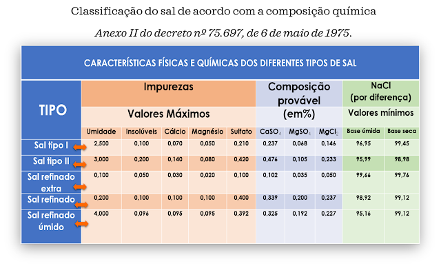
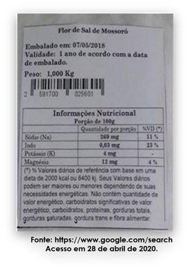

O SAL (cloreto de sódio) é importantíssimo na alimentação e na história do homem. Já foi até utilizado como dinheiro! É utilizado desde épocas remotas para conservação e tempero dos alimentos, dando o gosto salgado tão agradável às preparações.
O sal é formado por sódio e cloro, os quais são componentes essenciais para a vida dos animais, porém, deve ser consumido com moderação.
Muitas pessoas têm divulgado informações equivocadas sobre o sal, levando o consumidor a gastar mais com produtos que não possuem as vantagens alegadas.
|Definição do Sal|
De acordo com a Legislação Brasileira, Decreto Nº 75.697, de 06 de maio de 1975, entende-se como sal o cloreto de sódio cristalizado extraído de fontes naturais.
O sal é classificado em “sal comum” e “sal refinado”, de acordo com seus teores de umidade, de cloreto de sódio e da presença de outros sais e/ou impurezas.
I - O sal comum pode ser tipo I ou tipo II:
Sal tipo I — deve ter no máximo 2,5% de umidade, no mínimo 96,95% de cloreto de sódio e até 0,55% de outros sais.
Sal tipo II — deve ter no máximo 3,0% de umidade, no mínimo 95,99% de cloreto de sódio e até 1,01% de outros sais.
II – O sal refinado é o que possui os cristais de menor tamanho:
Sal refinado extra — deve ter no máximo 0,1 % de umidade, no mínimo 99,66% de cloreto de sódio e até 0,24% de outros sais.
Sal refinado — deve ter no máximo 0,2 % de umidade, no mínimo 98,92% de cloreto de sódio e até 0,88% de outros sais.
Sal refinado, úmido — deve ter no máximo 4,0 % de umidade, no mínimo 95,16% de cloreto de sódio e até 0,84% de outros sais.
|Classificação do sal de Acordo com o tamanho dos cristais|
O sal comum, quanto ao tamanho de seus cristais, é classificado como:
I - o sal grosso: não tem especificações de tamanho dos cristais;
II - o sal peneirado: máximo de 5% de cristais retidos em peneira com 4,76mm de abertura;
III - o sal triturado: máximo de 5% de cristais retidos em peneira com 2,83mm de abertura;
IV - o sal moído: máximo de 5% de cristais retidos em peneira com 1,00mm de abertura.
II – O sal refinado é o que possui os cristais de menor tamanho:
O sal refinado de todos os tipos é o que tem no máximo 5% de cristais retidos em peneira com 0,84mm e 90% retidos na peneira com 0,105mm (também não pode ser um talco!).
O sal refinado extra e o sal refinado quando adicionados de antiumectantes poderão ser designados como "Sal de Mesa”.
Os antiumectantes são aditivos utilizados para reduzir a absorção de umidade e a tendência de adesão das partículas que compõem o alimento.
Os antiumectantes permitidos pela legislação para uso no sal refinado extra e o sal refinado são:
- carbonato de cálcio (até 2,5%);
- carbonato de magnésio (até 2,5%);
- fosfato tricálcio (até 2,5%);
- citrato de ferro amoniacal (até 0,002);
- silicato de cálcio (até 1,0%);
- ferrocianato de sódio (até 0,0005%);
- alumínio silicato de sódio (até 1,0%);
- dióxido de silício (até 1,0%).
O sal refinado, o sal integral e o sal dito marinho comercializados no Brasil são todos de origem marinha.
A denominação de “sal marinho” é dada ao sal que não passa pela etapa de lavagem. Esta etapa é comum na fabricação de sal para a retirada de impurezas.
|Etapas da Fabricação do Sal: |
Bombeamento – A água do mar é bombeada para a área de evaporação.
Evaporação – A água do mar é exposta ao sol para evaporar até atingir o limite de saturação do sal.
Cristalizadores – local onde ocorre a precipitação dos cristais de sal.
Colheita – os cristais precipitados podem ser colhidos mecanicamente ou manualmente.
Lavagem – o sal recolhido é lavado com salmoura (água de sal) para retirar impurezas.
Refino – moagem do sal para obter produtos com cristais de menor tamanho.
Estocagem/embarque.
|Sal de Origem Terrestre? |
O Sal do Himalaia pode até ser considerado de origem terrestre. Entretanto, há controvérsias sobre isso.
Ele é retirado de minas na região das cordilheiras do Himalaia que podem ter se formado por evaporação da água do mar.
O óxido de ferro e o manganês são as substâncias responsáveis pela coloração rosácea do sal, de acordo com o site do 'Brasil' Escola.
A Legislação Brasileira prevê a fabricação de Sais com baixa concentração de sódio — Sais Hipossódicos.
Os Sais Hipossódicos contêm metade ou menos teor de sódio que o sal comum. Podem ser:
"Sal com Reduzido Teor de Sódio“: possui 50% no máximo do teor de sódio contido na mesma quantidade do sal comum. Também conhecido como “Sal LIGHT”.
"Sal para Dieta com Restrição de Sódio“. Pode conter no máximo 20% do teor de sódio contido na mesma quantidade do sal comum. Este sal contém menor quantidade de sódio ainda que o Sal Light.
|Os Sais Hipossódicos contêm elevados teores de potássio.|
Para a fabricação dos sais hipossódicos é feita adição de cloreto de potássio ao sal na etapa de refino. Portanto, são sais com elevados teores de potássio.
Estes sais devem ser consumidos somente com orientação de médicos ou nutricionistas, pois podem acarretar problemas em pessoas com algumas patologias, por exemplo, insuficiência renal e pressão alta com uso de medicamentos poupadores de potássio.
|Os Sais são Importantes Fontes de Iodo|
O Iodo faz parte dos hormônios da tireoide. Sua deficiência causa o Bócio.
Esta doença era comum em diversos países do mundo e, por este motivo, os governos estabeleceram que os sais, por serem alimentos consumidos por todas as classes socioeconômicas, fossem enriquecidos com Iodo.
No Brasil, o enriquecimento do sal com IODO é regulamentado pela RDC nº 23, de 24 de abril de 2013, que estabelece que todo sal para consumo humano deve ter entre 15 e 45 miligramas de iodo por quilograma de sal.
O rótulo nutricional dos sais deve constar a informação de 15µg a 45µg de iodo por 1 grama de sal.
Encontramos na internet rótulos nutricionais de sais com teores de iodo de 35 mg em 1 grama. Provavelmente houve troca da unidade micrograma (µg) por miligrama (mg).
Se esta informação estivesse correta, o teor de Iodo no sal seria mil vezes maior que o estabelecido pela legislação e este sal seria tóxico.
|Composição dos Sais|
Todos os sais, exceto os hipossódicos, são compostos por mais de 95% de cloreto de sódio (refinado, para churrasco, marinho, integral, do Himalaia, flor de sal, etc).
O cloreto de sódio é formado por 39,3% de sódio e 60,7% de cloro.
Os sais possuem, aproximadamente, 390 mg de sódio e entre 15 e 45 microgramas (mcg) de Iodo em 1 grama.
|Previsão da composição do sal a partir da água do mar|
A água do mar contém em torno de 3, 5% de minerais. O cloreto e o sódio são os predominantes, totalizando juntos 85,8% dos minerais presentes na água do mar. Os demais elementos, juntos, perfazem apenas 14,2%.
Os únicos com concentração superior a 1% são: íon sulfato (7,7%), o magnésio (3,7%), o cálcio (1,2%) e o potássio (1,1%).
À medida em que a água do mar vai sendo evaporada, os sais destes minerais vão se aglomerando e formando cristais.
Alguns, por serem mais solúveis que o cloreto de sódio, são parcialmente perdidos, como é o caso do cloreto de magnésio.
Por este motivo, com exceção do sódio e do cloreto, os teores dos demais sais culinários são irrisórios para a nutrição.
Os teores de minerais nos sais culinários são inexpressivos do ponto de vista nutricional, com exceção do sódio e do cloreto.
1 grama de sal fornece 20% ou mais da Ingestão Diária Recomendada de sódio e menos que 0,41% de outros minerais.
De acordo com a Legislação Brasileira o teor máximo de cálcio nos sais pode chegar a 0,14% e o de magnésio 0,33% da Ingestão diária de referência
|Tipos de Sais|
Observe os rótulos nutricionais dos sais. Raramente há citação da presença de outros nutrientes que não o sódio, iodo e o potássio, no caso dos sais hipossódicos.
A Legislação Brasileira não permite que sejam citados nos rótulos dos alimentos vitaminas e minerais cujas quantidades na porção sejam inferiores a 5% da Ingestão Recomendada (Valor Diário de Referência-VD).
Esta determinação é para proteger o consumidor de propagandas enganosas. Impede que fabricante coloque no rótulo de seus produtos lista de nutrientes cujas quantidades são insignificantes do ponto de vista nutricional.
Produtos clandestinos podem ter informações nutricionais em desacordo com a legislação. FIQUE DE OLHO!
|Informação Nutricional de Acordo com a Legislação|
Observe abaixo os dois rótulos de sal do Himalaia que foram retirados de sites de vendas na internet.
No primeiro há o apelo “50% menos sódio” mas a quantidade de sódio declarada na informação nutricional é 380 mg em 1 grama, mesma quantidade do sal Rosa do Himalaia sem este apelo.
O teor de sódio nos sais não hipossódicos, pode variar entre 374 miligramas, no sal refinado úmido, até 390 mg em 1 grama, nos demais tipos de sal.
Portanto, este apelo é uma propaganda enganosa!
|Controvérsia nos Rótulos Nutricionais da Flor de Sal|
Um sal com apenas 269 mg de sódio, 4 mg de potássio (que não poderia ser citado neste rótulo) e 12 mg de magnésio teria que ter outros sais em quantidade expressiva ou muita água
A quantidade de sódio na flor de sal deve ser em torno de 390 mg de sódio em 1 grama, conforme apresentado no rótulo nutricional abaixo.
Há inúmeros sites na internet com ofertas de sais especiais, que alegam possuir mais de 80 elementos químicos. Fique atento! Isso é propaganda enganosa!
Dos elementos químicos existentes na terra, provavelmente não mais que 30 são essenciais para nós. Os demais são tóxicos ou não têm função para os animais.
O consumo máximo de sal comum deve ser de 5 gramas/dia (uma colher de café) que contém, aproximadamente, 2000 mg de sódio.
Os brasileiros consomem em torno de 12 gramas/dia.
O consumo máximo de sódio estabelecido pela legislação brasileira são 2.400 mg/dia.
A Organização Mundial de Saúde solicita que consumo de sódio seja ainda menor, 2.000 mg/dia.
| Quantidade de Sódio em alguns alimentos |
O uso de caldos de galinha e de carne é uma ilusão em termos de quantidade de sódio.
½ tablete possui quase três vezes mais sódio do que a quantidade presentes em 1 grama (uma colher de café) dos sais não hipossódicos e cinco vezes mais do que no sal light
O consumo elevado de sódio contribui para o desenvolvimento de doenças cardiovasculares, hipertensão e aumenta a perda de cálcio, contribuindo, assim, para a osteoporose.
O sódio de todos os tipos de sais é absorvido na mesma intensidade e causa os mesmos problemas para a saúde.
Se engoliu o sal, o sódio será absorvido!
Fique alerta!
Não acredite em propagandas enganosas de que alguns sais são mais saudáveis que outros!
Referências Bibliográficas
ÁGUA DO MAR. In: WIKIPÉDIA: a enciclopédia livre. Disponível: https://pt.wikipedia.org/wiki/%C3%81gua_do_mar
BRASIL. Ministério da Saúde. Resolução RDC ANVISA/MS Nº 54, DE 12 DE NOVEMBRO DE 2012. Regulamento Técnico sobre Informação Nutricional Complementar.
BRASIL. Ministério da Saúde. PORTARIA Nº 54, DE 4 DE JULHO DE 1995. Padrão de identidade e qualidade para sal hipossódico.
BRASIL. Ministério da Saúde. DECRETO Nº 75.697, DE 6 DE MAIO DE 1975. Padrão de identidade e qualidade para o sal destinado ao consumo humano.
BRASIL. Ministério da Saúde. Resolução RDC ANVISA/MS No 23, de 24 abril de 2013. Regulamento técnico que dispõem sobre o teor de iodo no sal destinado ao consumo humano.
BRASIL. Ministério da Saúde. GUIA ALIMENTAR PARA A POPULAÇÃO BRASILEIRA - Promovendo a Alimentação Saudável. Brasília, 2008.
BRASIL. Ministério da Saúde. Resolução da Diretoria Colegiada - RDC ANVISA/MS Nº. 269, de 22 de setembro de 2005. Regulamento técnico sobre a ingestão diária recomendada (IDR) de proteína, vitaminas e minerais.
BRASIL. Ministério da Saúde. Agência Nacional de Vigilância Sanitária (ANVISA). Resolução da Diretoria Colegiada - RDC ANVISA/MS Nº 360, de 23 de dezembro de 2003. Regulamento técnico sobre rotulagem nutricional de alimentos embalados.
BRASIL. Ministério da Saúde. Resolução da Diretoria Colegiada - RDC ANVISA/MS No 360, de 23 dezembro de 2013. Regulamento técnico sobre rotulagem nutricional de alimentos embalados.
CISNE. Disponível em: http://www.salcisne.com.br/index.php. Data de acesso: 21/04/2020.
NORSAL. Disponível em: http://www.norsal.com.br. Data de acesso: 21/04/2020.
SAL GEMA. Disponível em: https://pt.wikipedia.org/wiki/Sal-gema. Data de acesso: 22/04/2020.
SAL ROSA DO HIMALAIA. Disponível em: https://brasilescola.uol.com.br/quimica/sal-rosa-himalaia.htm. Data de acesso: 22/04/2020.
TBCA. Disponível:http://www.tbca.net.br/basedados/composicao_alimentos.phpproduto=sal&cmb_grupo=MISCEL%C3%82NEA